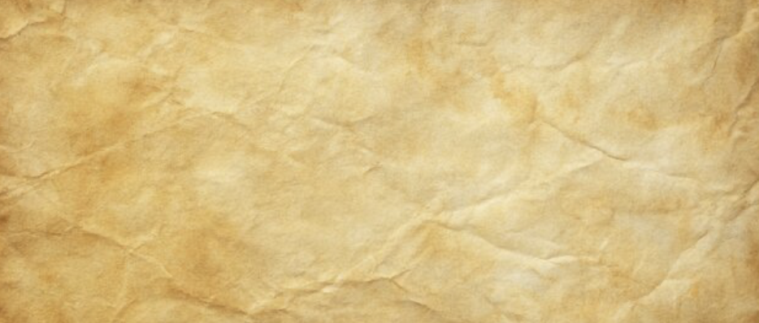

Same crumpled texture source, three distinct art directions: warm saffron ledger, cool stone vellum, and deep Naskh manuscript. Each pairs a unique palette, texture treatment, and font stack.

Mock 1Warm honey paper, saturated crumple, gold-brown accents — lively and sunlit.
Mock 2Cool grey-green vellum, desaturated crumple, sage accents — calm and archival.
Mock 3Deep umber ink, copper stains, Arabic-forward typography — oldest manuscript mood.